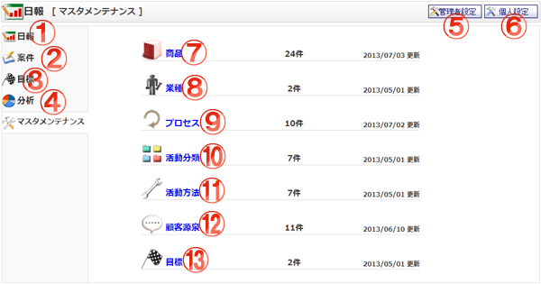

日報のマスタメンテナンス画面です。
システム管理者・プラグイン管理者のみが表示されます。

機能説明
日報 リンク日報週間画面へ遷移します。 |
案件 リンク案件一覧画面へ遷移します。 |
|---|---|
目標 リンク目標設定画面へ遷移します。 |
分析 リンク分析画面へ遷移します。 |
管理者設定ボタン管理者設定メニュー画面へ遷移します。 |
個人設定ボタン個人設定メニュー画面へ遷移します。 |
商品リンク商品一覧画面へ遷移します。 |
業種リンク業種一覧画面へ遷移します。 |
プロセスリンクプロセス一覧画面へ遷移します。 |
活動分類リンク活動分類一覧画面へ遷移します。 |
活動方法リンク活動方法一覧画面へ遷移します。 |
顧客源泉リンク顧客源泉一覧画面へ遷移します。 |
目標リンク目標一覧画面へ遷移します。 |